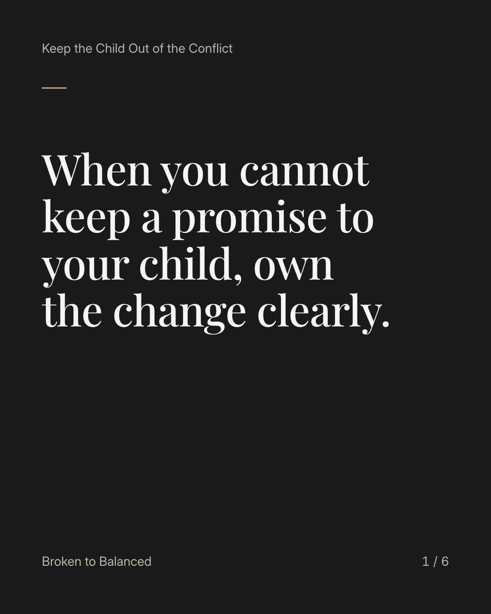
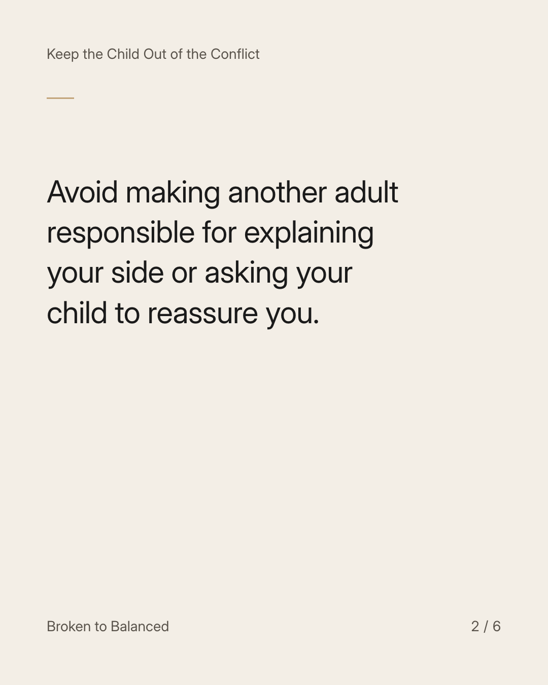
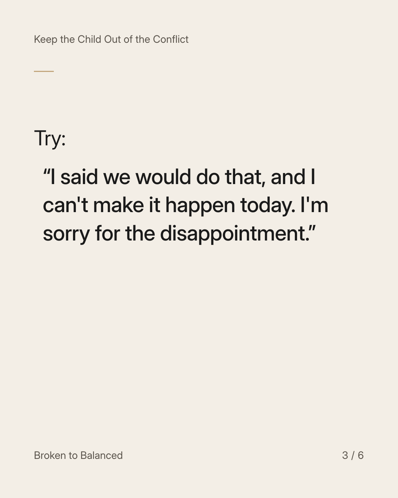
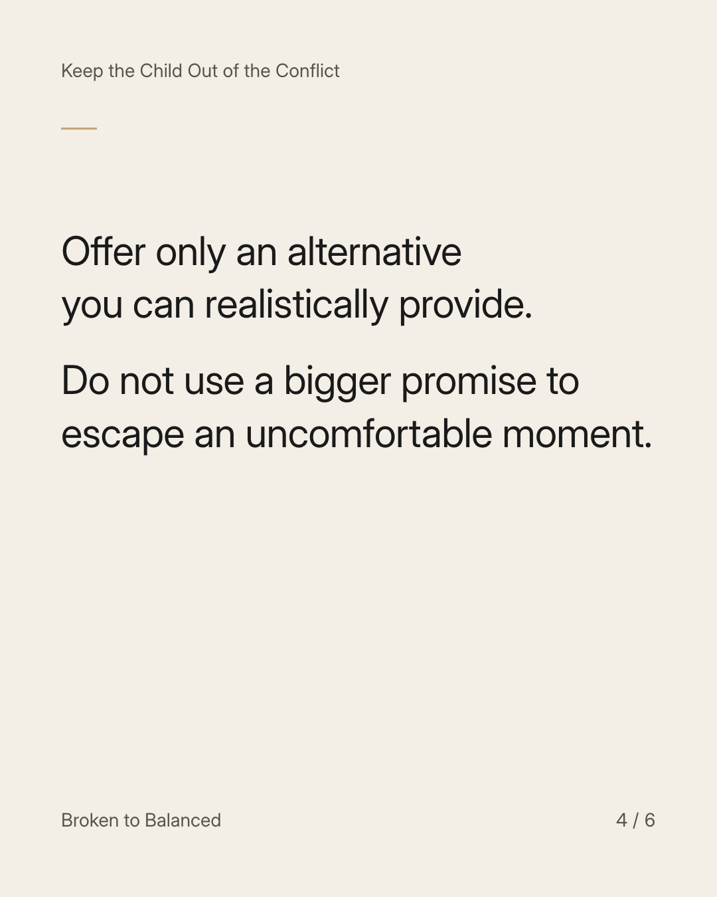
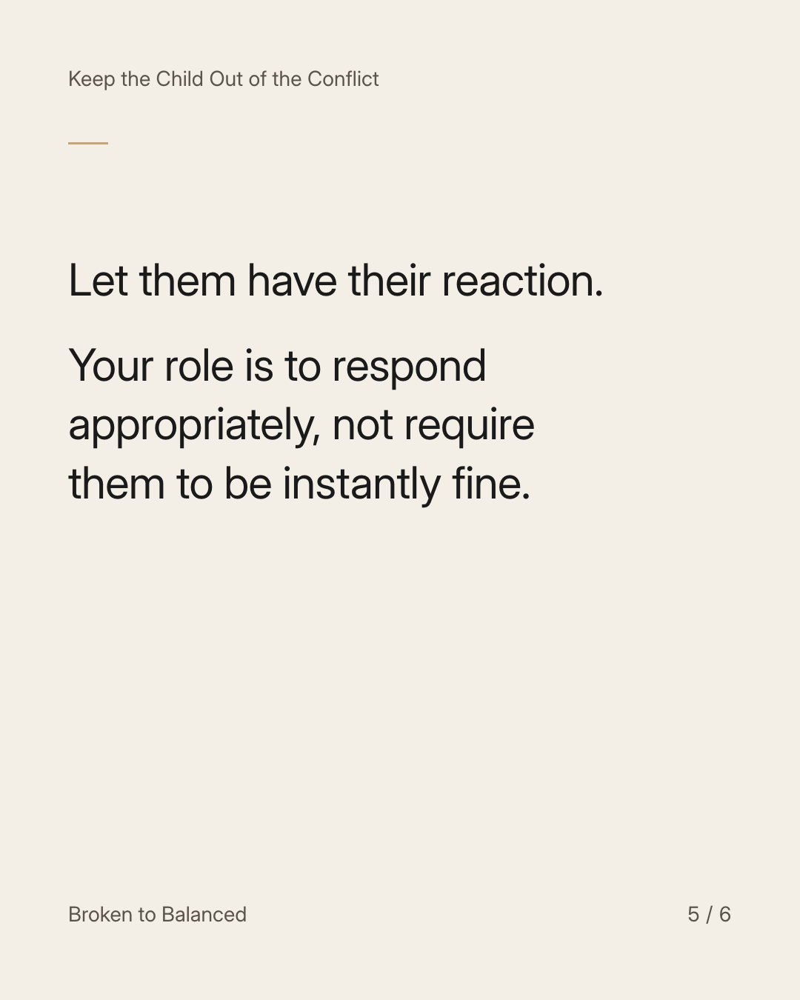
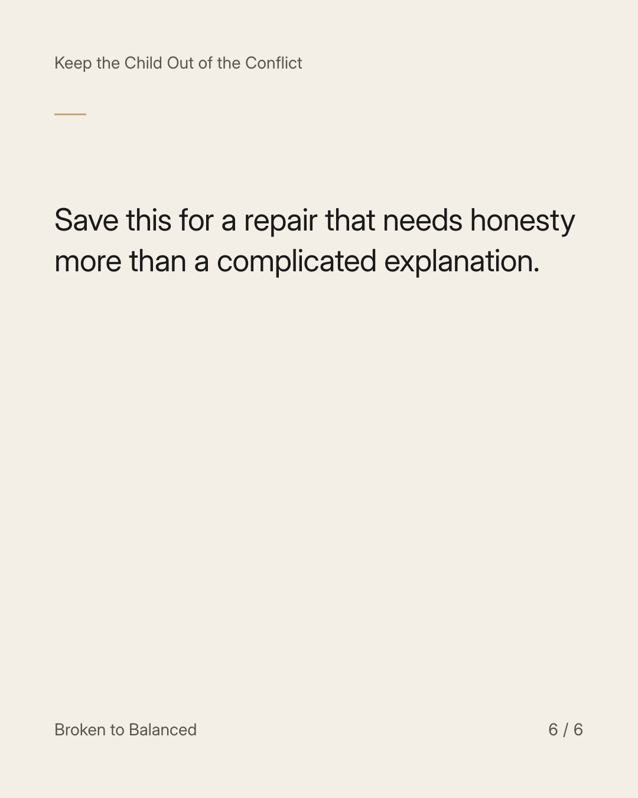

Exact text and accessibility text
When you cannot keep a promise to your child, own the change clearly.
Slide 1 of 6. When you cannot keep a promise to your child, own the change clearly.


Exact text and accessibility text
Avoid making another adult responsible for explaining your side or asking your child to reassure you.
Slide 2 of 6. Avoid making another adult responsible for explaining your side or asking your child to reassure you.


Exact text and accessibility text
Try: “I said we would do that, and I can't make it happen today. I'm sorry for the disappointment.”
Slide 3 of 6. Try: “I said we would do that, and I can't make it happen today. I'm sorry for the disappointment.”


Exact text and accessibility text
Offer only an alternative you can realistically provide. Do not use a bigger promise to escape an uncomfortable moment.
Slide 4 of 6. Offer only an alternative you can realistically provide. Do not use a bigger promise to escape an uncomfortable moment.


Exact text and accessibility text
Let them have their reaction. Your role is to respond appropriately, not require them to be instantly fine.
Slide 5 of 6. Let them have their reaction. Your role is to respond appropriately, not require them to be instantly fine.


Exact text and accessibility text
Save this for a repair that needs honesty more than a complicated explanation.
Slide 6 of 6. Save this for a repair that needs honesty more than a complicated explanation.
Exact caption
Plain-text fallback: select and copy the caption.